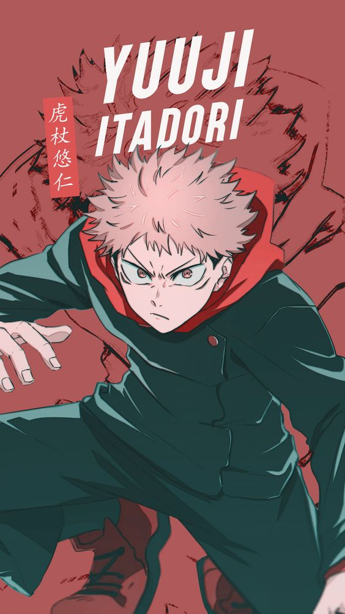
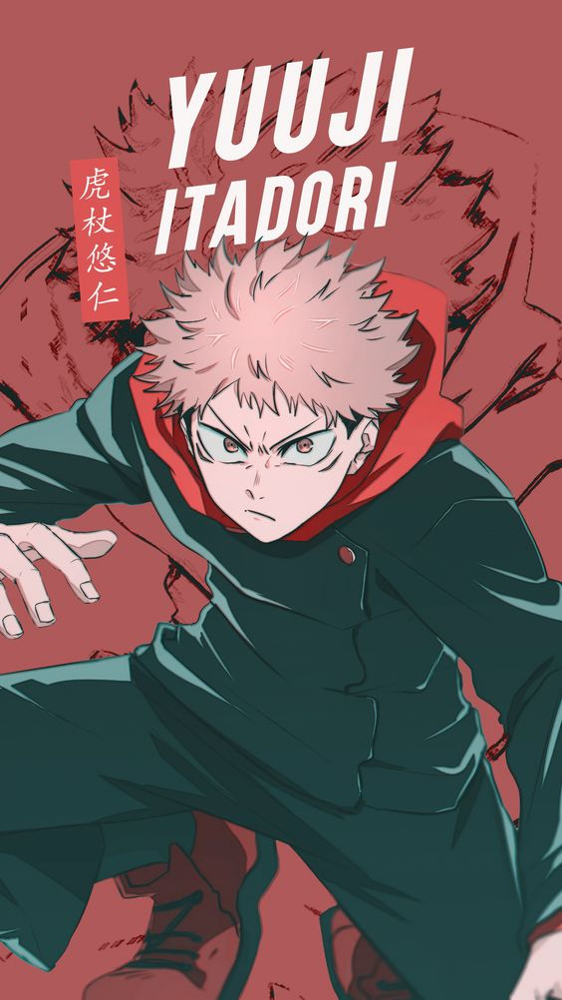

Jujutsu Kaisen
Sinopsis
Yuji Itadori es un genio en el atletismo. Pero no tiene ningún interés de correr en círculos, está contento como una almeja en el Club de Investigación Oculta. Aunque solo está en el club por diversión, ¡las cosas se ponen serias cuando aparece un verdadero espíritu en la escuela! Cuando su abuelo está en su lecho de muerte, Yuji le hace una promesa; que hará actos amables para que muera rodeado de sus seres queridos, a diferencia de su abuelo. Sin embargo, la vida de Yuji da un giro repentino cuando conoce a Megumi Fushiguro, un chamán que intenta recuperar un objeto maldito. Cuando los amigos de Yuji abren el objeto maldito que encontraron, las cosas van hacia el sur cuando los espíritus malditos que engendró comienzan a vagar en la escuela. Como Fushiguro y Yuji son casi derrotados por uno de los espíritus, Yuji se traga el objeto maldito y gana su poder. Como resultado, Yuji es maldecido por el objeto y es arrastrado al emocionante mundo de chamanes y espíritus malditos de Fushiguro.
Imagenes
 
